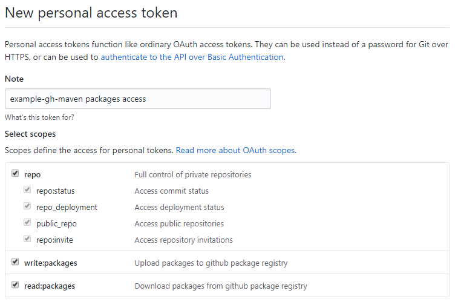

Using the GitHub packages Maven repository
2020 January 11
You may've heard about GitHub Packages which allows you to publish and consume packages with various repositories. One in particular is Maven repositories, which we'll explore in detail in this post.
You'll be needing the following:
- A GitHub account
- A saker.build system release. (Included in the example project.)
Create a git repository
First we create a simple git repository on GitHub. It can be private, you'll still be able to use the Maven repository features.
We recommend that you initialize it with a README, so cloning it might be easier.
After you've created it, you'll notice the 0 packages link in the repository header. After clicking it, you'll be redirected to the site where the published artifacts will be visible.

Creating your app
You probably have something in mind that you want to publish to GitHub packages. For this example, we're going to have a simple utility class with a dependency on Apache Commons Lang.
You can set up your project in any way you like, or just clone the example repository that we use for this post. It simply resolves the Maven dependencies, compiles the app into a JAR, and deploys it to GitHub Packages.
git clone https://github.com/Sipkab/example-gh-maven.git
Creating a personal access token
In order to be able to publish to the Maven repository, you'll need to authenticate yourself with GitHub. In order to do that, you need a personal access token that you can use to log in when deploying the artifacts.
You can create these access tokens by going to your account settings, navigate to Developer settings and select Personal access tokens.

Once you're here, select Generate new token. The generated token will be used to access the repository you're deploying for. Select the write:packages, and read:packages scopes for your token. The repo scope will also be selected automatically for you.

You can name your token any way that you'd like, its just for informational purposes.
Back to the project
If you've checked out the example repository, you can build your project by running the following command:
java -jar saker.build.jar -bd build export
This will result in the creation of a JAR file at the build/saker.jar.create/output.jar path. It will contain the compiled classes from the src/main/java directory.
Tip: you don't have to deal with command line when using the Eclipse plugin.
Deploying to GitHub
For deployment, we use the saker.maven.deploy() build task. It will take the specified artifacts, and upload them to GitHub. Let's see it in more detail:
deploy() {
# Replace USERNAME, REPOSITORY_NAME, and PERSONAL_ACCESS_TOKEN literals with your own
$jar = include(export)[jar]
saker.maven.deploy(
Artifacts: {
"pom": pom.xml,
"jar": $jar[Path],
},
Coordinates: "example.saker.build:maven-gh-packages:0.1.0",
RemoteRepository: {
Id: github,
Url: "https://maven.pkg.github.com/USERNAME/REPOSITORY_NAME",
Authentication: saker.maven.auth.account(
Username: USERNAME,
Password: PERSONAL_ACCESS_TOKEN,
)
}
)
}
Tip: you can click on task names to view their documentation.
You can run the above with the following command:
java -jar saker.build.jar -bd build deploy
We specify the artifacts using the Artifacts parameter. We deploy the pom.xml alongside our Java archive to GitHub. The Coordinates of the deployed artifacts need to be specified, so the saker.maven.deploy() task knows what it is publishing.
The RemoteRepository parameter specifies the repository where we're publishing. The Url should be based on the above, but with the USERNAME and REPOSITORY_NAME replaced with your values.
Remember the previously generated personal access token? We use it here by providing an account based authentication mechanism for the deployment. It needs to be set to the Authentication field of the RemoteRepository, and the credentials need to be given to the saker.maven.auth.account() build task. Be sure to replace the PERSONAL_ACCESS_TOKEN literal with your own access token.
Important! After deploying artifacts to GitHub Packages, you won't be able to overwrite them! Not even SNAPSHOT artifacts. You can delete them, but it should be only used as a last resort.
Using the repository
After deploying, you probably want to use your artifacts. You can authenticate yourself for other Maven build tasks the same way you did for deployment:
saker.maven.resolve(
Artifacts: "example.saker.build:maven-gh-packages:0.1.0",
Configuration: {
Repositories: [
{
Id: central,
Url: "https://repo.maven.apache.org/maven2/",
},
{
Id: github,
Url: "https://maven.pkg.github.com/USERNAME/REPOSITORY_NAME",
Authentication: saker.maven.auth.account(
Username: USERNAME,
Password: PERSONAL_ACCESS_TOKEN,
),
}
]
}
)
The above will use the central repository as well as the one we deployed our artifact to. The dependencies of our artifact will be resolved, resulting in the following:
org.apache.commons:commons-lang3:jar:3.9
example.saker.build:maven-gh-packages:jar:0.1.0
If your git repository is public, you can omit the Authentication when retrieving from the repository.
Further improvements
You may've noticed that we specified the full configuration and credentials for accessing GitHub Packages in both of the examples. This would be very verbose and make the build scripts hard to follow. You can easily export this configuration to a static or global variable for the build, letting you define the congfiguration in a single place:
static(GITHUB_CONF) = {
Id: github,
Url: "https://maven.pkg.github.com/USERNAME/REPOSITORY_NAME",
Authentication: saker.maven.auth.account(
Username: USERNAME,
Password: PERSONAL_ACCESS_TOKEN,
)
}
saker.maven.deploy(
Artifacts: {
"pom": pom.xml,
"jar": $jar[Path],
},
Coordinates: "example.saker.build:maven-gh-packages:0.1.0",
RemoteRepository: static(GITHUB_CONF)
)
saker.maven.resolve(
Artifacts: "example.saker.build:maven-gh-packages:0.1.0",
Configuration: {
Repositories: [
{
Id: central,
Url: "https://repo.maven.apache.org/maven2/",
},
static(GITHUB_CONF)
]
}
)
We also recommend exporting the whole Configuration parameter value of Maven operations.
You should also make effors to not upload your personal access tokens to GitHub. You should store them in a build script file that is not uploaded to version control, and set the .gitignore to exclude it. You can the include() that build script from the known location and use the token from there. We employ this behaviour in the saker.build repositories.
Conclusion
GitHub packages can be a nice place to distribute your Maven artifacts. Be it private or public use, having a free option (or paid for larget scale) to host some content allows you to experiment with your software and may require less hassle to maintain. It is also alongside your repository, making discoverability easier.
However, others who consume the artifacts that you publish to GitHub Packages will need to add it to their Maven repositories. If a lot of people publishes to GitHub Packages, this list of repository configuration can grow significantly, making it hard to maintain. We recommend you publish to already established repositories to allow easier access to your artifacts.
This post was made because the saker.maven.support package was just updated to support authentication, installation, and deployment. We wanted to showcase this through the publishing workflow to GitHub Packages that you can try right out.